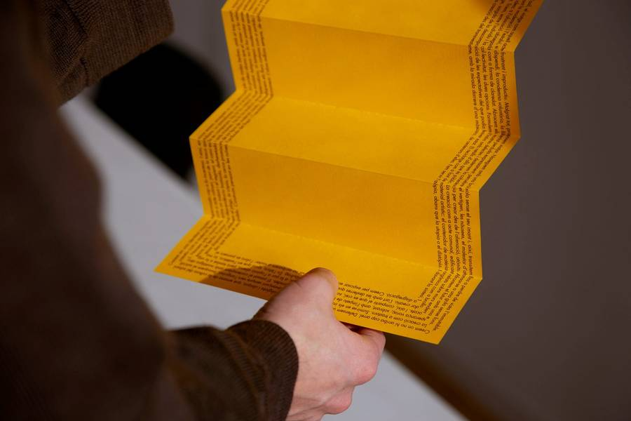
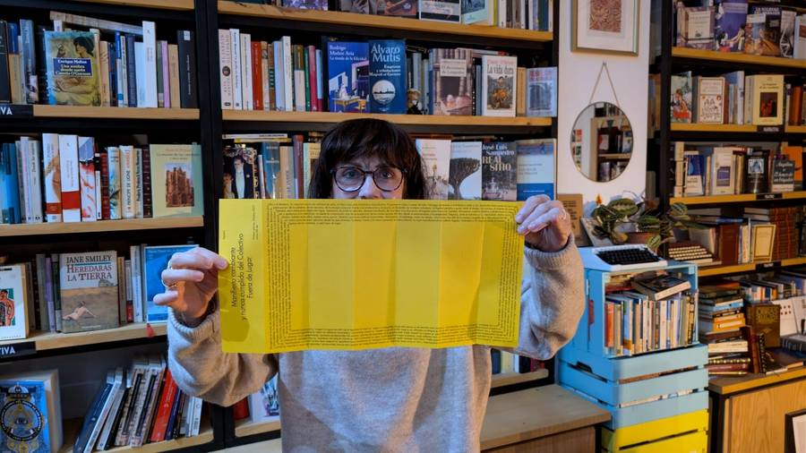

Crear donde no alcance ninguna raíz.

Escogemos un mundo de ciudades recordadas, siempre en construcción, en terrenos donde no deberían estar. Reivindicamos el exilio y el destierro, la creación como una solicitud de asilo, el viaje como acto frustrante e improductivo.
- marca blanca
- esperanza voraz
- nostalgia atroz
- la fractura profiláctica
- resucitar en vida
- la libertad perdida a posta
- brújula sin imán
- la creación como trastorno
- lo atópico
- la llegada del moho
- garganta sin fondo
- la ofuscación como forma de claridad
Agenda →

Manifiesto
Cambiante y nunca cumplido. En español, català, english, français, português y asturianu.

Eventos
Los ciclos En voz alta, La Magistral y 14.4, con La Perecquiana en Valladolid; poesía en el Almíbar de Córdoba.
Proyectos
Brújula sin imán, Maleza, La llegada del moho, Garganta sin fondo, Ante la síntesis la disgregación — títulos sacados del propio manifiesto.

Galería
Las sesiones tal como ocurrieron: librerías llenas, gente leyendo en voz alta, el manifiesto pasando de mano en mano.